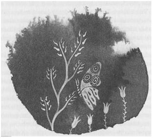

DOKUZ: İFFİSH

Ged, Batı El Adası'ndaki o köyde üç gün geçirdi. Bu arada kendisini toparladı ve büyü ile denizin sürüklediği tahtalardan değil de, kendinden sağlam bir direği ve yelkeni olan, iyice çivilenmiş ve kalafat edilmiş, sağlam kalaslardan yapılmış, içinde rahatça yolculuk edip, gerektiğinde de uyuyabileceği bir tekne hazırladı. Kuzey'in ve Uçyöre teknelerinin çoğu gibi, sert denizlere dayanabilecek güçte olması için kaplama parçaları birbirine bindirilerek yapılmıştı; her parçası son derece dikkatlice imal edilmiş, dayanıklı bir tekneydi. Ged, bu tekne ile uzun yollar katedebileceğini düşünerek, tahtayı bir de derinlemesine örülmüş büyülerle kuvvetlendirdi. İki üç kişi taşıyabilecek şekilde yapılmıştı tekne; sahibi olan yaşlı adam, kardeşleriyle birlikte, bu kayıkla sert denizlerde ve kötü havalarda çok yolculuklar yapmış olduklarını ve teknenin tüm koşullarda yiğitçe yol aldığını anlattı.
Gontlu açıkgöz balıkçının tersine, bu yaşlı adam Ged'in büyücülüğünden çekindiği ve ona hayran olduğu için, kayığı bedava verecekti. Ama Ged, sihirbaz usulü yaptı ödemesini; adamın gözlerini kör eden kataraktını iyileştirerek. Buna çok sevinen adam, Ged'e, "Biz tekneye Deniz Çulluğu derdik, ama sen ona Ufkabakan de ve burnunun iki yanına göz resimleri çiz. Benim minnettarlığım o kör tahtalardan seni gözetecektir; seni denizin üstündeki ve altındaki kayalardan koruyacaktır. Dünyanın ne kadar aydınlık olduğunu, sen bana gösterinceye kadar unutmuştum," dedi.
Ged, El Adası'ndaki dik ormanın altına kurulmuş olan köyde, gücü yerine geldikçe, başka işler de yaptı. Buranın halkı, Ged'in çocukluğunda, Gont'taki Kuzey Vadisi'nde tanıdığı insanlara benziyordu. Bunlar, onlardan bile fakirdi. Onların yanında, kendisini, zenginlerin saraylarındakinden çok daha rahat hissediyor; daha onlar istemeden, neye gereksinim duyduklarını biliyordu. Hastalıklı ve sakat çocuklara iyileştirme ve koruma büyüleri, köylülerin zayıf koyun ve keçi sürülerine bereket tılsımı yaptı. Ona getirdikleri iğlere ve dokuma tezgâhlarına, teknelerin küreklerine ve tunçtan yapılmış aletlerine, taşlarına Simn Rünü işledi. Kulübelerinin damlarına da evleri ve ev halkını yangından, rüzgârdan ve delilikten koruyan Pirr Rünü yazdı.
Teknesi Ufkabakan su ve kurutulmuş balıkla iyice doldurulup hazır olduğunda bile Ged, köyün genç okuyucusuna Morred'in Kahramanlıkları ve Havnor Ezgisi'ni öğretmek için bir gece daha köyde kaldı. El Adalarına, Adalar Diyarı'nın gemileri çok ender uğrardı; bir asır önce çıkartılan şarkılar bile bu köy halkına yeni geliyor, kahramanlar hakkında bir şeyler duymak için yanıp tutuşuyorlardı. Eğer Ged'in başında bu bela olmasaydı, orada seve seve bir hafta veya bir ay daha kalıp bildiği bütün şarkıları onlara söylerdi; böylece bu büyük şarkılar, yeni bir adada daha öğrenilmiş olurdu. Fakat özgür değildi; ertesi gün yelken açarak Uçyöre'nin engin denizlerinden dosdoğru güneye doğru gitmeye başladı. Çünkü gölge güneye doğru gitmişti. Bunu anlamak için arama-efsunu yapmasına gerek yoktu. Bunu sanki sağlam ve çözülmez bir sicim ikisini birbirine bağlıyormuş gibi biliyordu. Aradaki uzaklıklar, denizler, karalar, hiç mi hiç bir şey ifade etmiyordu. Böylece kendinden emin olarak, acele ya da ümit etmeden, gitmesi gereken yolda ilerledi. Kış aylarının rüzgârı onu güneye götürüyordu.
Yapayalnız denizde, bir gün ve bir gece yol aldı; ikinci gün küçük bir adaya geldi. Adanın adının Vemish olduğunu öğrendi. Küçük limandaki insanlar, Ged'e göz ucuyla bakıyorlardı; derken köyün sihirbazı geldi, alelacele. Ged'e ters ters baktıktan sonra selam verdi ve hem gururlu, hem de onu kandırmak istercesine tatlı bir edayla, "Büyücü Hazretleri! Bu aşırı cesaretimi hoş görünüz; yolculuğunuz için gerekli olan herhangi bir şeyi -yiyecek, içecek, yelken kumaşı, urgan- ne olursa, size vermemize izin vererek bizi onurlandırınız. Kızım şu anda kayığınıza, yeni kızarmış bir çift tavuk getiriyor. Yine de ben, eğer uygun görürseniz, bir an önce buradan gitmenizin akıllıca olacağını düşünüyorum. Halkımız büyük bir korku içinde. Kısa bir süre önce, evvelki gün, birisi bizim gösterişsiz adamızı kuzeyden güneye doğru geçmişti; ama bu adamı buraya getiren veya bu adamı burada bırakan bir gemi görünmedi. Bu adamın bir gölgesi de yoktu. Onu görenler, size benzediğini söylüyorlar," dedi.
Bunun üzerine Ged başını eğip döndü ve bir daha arkasına bakmadan Vemish'in limanına gidip, adadan ayrıldı. Adalıları korkutmak veya sihirbazı kendisine düşman etmek, onun hiçbir işine yaramazdı. Böyle olmasındansa, denizde uyuyup, sihirbazın kendisine söylemiş olduğu şeyler üzerinde düşünmeyi tercih ederdi. Bu olay iyice kafasını karıştırmıştı.
Gün sona erdi; gece ise, tüm karanlık saatler ve gri bir alacakaranlık boyunca, denizin üzerinden fısıldayan soğuk bir yağmur eşliğinde geçti. Hâlâ kuzeyden esen hafif bir rüzgâr, Ufkabakan'a yol veriyordu. Kısa bir süre sonra yağmur dindi, sis dağıldı; gün ilerleyince Ged, sağ çaprazında kış aylarının o amaçsızca sürüklenen güneşi altında parıldayan, alçak mavi tepeleriyle büyük bir ada gördü. Bu tepelerin arasına kurulmuş küçük küçük kasabaların ocaklarından çıkan dumanlar, kurşuni damlı evlerin üzerine, masmavi asılı duruyordu; denizin bu engin değişmezliği içinde hoş bir görüntü.
Ged limanına dönen bir balıkçı filosunu izledi; altın renkli bu kış akşamında, kasabanın sokaklarından geçerek Harrekki adında bir han buldu. Handaki ocak ateşi, bira, kızarmış kuzu pirzolası, hem ruhunu hem de bedenini ısıttı. Hanın masalarında birkaç yolcu daha vardı; Doğu Uçyöreleri'nin tüccarları. Fakat çoğunluğu, buraya kaliteli bira, havadis ve sohbet için gelen kasabalılar oluşturuyordu. Buranın halkı, El Adası'nın balıkçı halkı gibi kaba ve mahcup insanlar değildi. Tam kasabalıydılar; uyanık ve temkinli. Belli ki Ged'in büyücü olduğunu anlamışlardı ama bu konuda hiçbir şey söylenmemişti. Sadece hancı, laf arasında (çok da çenesi düşük bir adamdı), bu kasabanın, yani İsmay'in, paha biçilmez bir serveti, yani Roke Okulu'nda yetişmiş, asasını bizzat Başbüyücü tarafından almış hünerli bir büyücüyü adanın diğer kasabalarıyla paylaştığı için çok şanslı olduğunu; şu anda kasaba dışında olsa da, İsmay'in içinde, ailesinden kalma bir evde oturduğunu ve bu yüzden de, bu kasabanın Yüksek Sanatlarla meşgul başka birine gereksinim duymadığını söyledi. "Zaten ne demişler; bir kasabada iki asa, kavga çıkar sonunda, öyle değil mi efendim?" dedi hancı, neşeyle gülümseyerek. Böylece Ged'e, büyücülükle rızkını arayan bir gezgin-büyücüye bu kasabada yer olmadığı bildirilmişti. Sonuçta, Vemish'ten pervasızca, İsmay'dense yumuşak bir şekilde kovulmuştu. Oysa Doğu Uçyöreleri'nin misafirperverlik gelenekleri için neler duymuştu Ged. Burası İffish Adası'ydı, arkadaşı Vetch'in doğmuş olduğu ada. Hiç de Vetch'in anlatmış olduğu gibi misafirperver bir adaya benzemiyordu.
Ama yine de, aslında, yüzlerinden iyi insanlar oldukları görülüyordu. Sadece gerçeği sezmişlerdi: Ged'in onlardan ayrı olduğu, onlardan koparıldığı, kötü bir kadere sahip olduğu ve karanlık bir şey tarafından kovalandığı gerçeğini. Ateşin ısıttığı sıcacık bir odada esen soğuk bir rüzgâr, bir fırtına tarafından, yabancı topraklardan sürüklenip getirilmiş kara bir kuş gibiydi. Kötü kaderini alıp ne kadar çabuk uzaklaşırsa, bu insanlar için o kadar iyi olacaktı.
"Bir iz peşindeyim," dedi hancıya. "Burada sadece bir iki gece kalacağım." Sesi biraz kasvetliydi. Hancı, köşede duran porsukağacından büyük asaya bir göz atarak, ilk defa hiçbir şey söylemedi; bunun yerine, Ged'in bardağını üzerinden köpükleri taşıncaya kadar kaliteli siyah birayla doldurdu.
Ged, İsmay'de sadece bir gece geçirmesi gerektiğini biliyordu. Onu ne burada, ne de başka bir yerde, hoş tutuyorlardı artık. Yolcu yolunda gerekti. Fakat Ged, bomboş, soğuk denizden ve kendisiyle konuşan tek bir kulun olmadığı o sessizlikten bıkmıştı. Kendi kendine, İsmay'de bir gece daha kaldıktan sonra, ertesi gün gitmeye karar verdi. O yüzden geç yattı; uyandığında hafif bir kar atıştırıyordu. Ged o gün, kendi işleriyle meşgul insanları seyretmek için kasabanın yollarında ve sokaklarında aylak aylak dolaştı. Kürk pelerinlerine sarınmış çocukları, buzdan kalelerinde oynarken, kardan adam yaparken seyretti. Sokak aralarında açık kapılardan, kapıdan kapıya yapılan dedikoduları dinledi. Pancar gibi kızarmış yüzüyle, ateşin önünde koca körüğün saplarını aşağı yukarı açıp kapayan, kan ter içindeki küçük çırağı ile tunçustasını izledi. Kısa gün sona ererken, kızıla çalan sarı bir ışıkla aydınlanmış evlerin pencerelerinden, evlerinde, dokuma tezgâhlarının başında, bir şey söylemek veya gülümsemek için dönüp o sıcacık yuvada bulunan kocalarına veya çocuklarına bakan kadınları gördü. Ged tüm bunları dışarıdan, uzaktan, yapayalnız izledi. Bu kadar kederliyken bile, üzgün olduğunu kendi kendisine bile itiraf etmiyordu. Gece karanlığı çökmesine rağmen, hana geri dönmeye gönlü razı olmuyor, sokaklarda dolanmaya devam ediyordu. Bir adamla bir kızın, neşe içinde caddeden beraberce yürüyerek yanından geçip kasaba meydanına doğru ilerledikleri duydu. Adamın sesini duyar duymaz geri döndü, bu sesi çok iyi tanıyordu.
Çiftin arkasından gidip onları yakaladı. Yalnızca uzaktaki lambaların aydınlattığı alacakaranlıkta onların yanına vardı. Ged'i görünce, kız geriye doğru bir adım attı, fakat adam Ged'i süzdükten sonra, elinde taşımakta olduğu asayı Ged ile aralarına gelecek şekilde, kötü bir hareketten veya tehditten kendisini koruyacak bir engel oluşturmak istercesine havaya kaldırdı. Bu Ged'in kaldıramayacağı kadar ağır bir hareketti. "Beni tanıyacağını zannetmiştim, Vetch," derken, sesi biraz titriyordu.
Bu sözün üzerine bile Vetch bir an tereddüt etti.
"Seni tanıyorum," dedi. Asasını indirdi, Ged'in elini tuttu ve ona sarıldı. "Seni tanıyorum! Hoş geldin dostum, hoş geldin! Seni ne kötü karşıladım, sanki arkamdan gelen bir hayaletmişsin gibi... Üstelik hep senin gelmeni bekledim, yolunu gözledim..."
"Demek İsmay'in, anlata anlata bitiremedikleri büyücüsü sendin. Ben de merak etmiştim..."
"A, evet, onların büyücüsüyüm; ama dinle, sana, neden seni tanıyamadığımı anlatayım. Belki de seni gereğinden çok düşünüyordum. Üç gün önce... üç gün önce burada, İffish'te miydin?"
"Dün geldim."
"Üç gün önce, Quor'un sokaklarında, şu tepelerdeki köyde, seni gördüm. Daha doğrusu, senin bir benzerini, bir kopyanı veya sadece sana benzeyen başka bir adam gördüm. Önümde yürüyor, köyden dışarı çıkıyordu. Onu gördüğüm anda, yoldaki bir dönemeçten dönüyordu. Ona seslendim ama bir cevap alamadım. Peşinden gittim ama kimseleri göremedim. Bir iz yoktu fakat toprak donmuştu. Bu çok tuhaf bir şeydi; şimdi de, sen öyle gölgeden çıkıp geliverince, işin içinde yine bir oyun olabilir diye düşündüm. Çok özür dilerim Ged." Vetch, Ged'in gerçek ismini, biraz gerisinde beklemekte olan kızın duyamayacağı şekilde, yavaşça söylemişti.
Ged de arkadaşının gerçek ismini kullanabilmek için yavaşça konuştu: "Önemli değil, Estarriol. Bu benim gerçek varlığım, ve seni gördüğüme çok memnun oldum..."
Vetch, belki de Ged'in sesinde, salt memnuniyetten başka bir şey daha duydu. Elini hâlâ Ged'in omuzundan çekmemişti; artık Gerçek Lisan'da konuşuyordu: "Başında bir dertle karanlıklardan çıkıp geldin Ged, yine de gelişin bana mutluluk getirdi." Sonra da Uçyöre şivesiyle konuştuğu Hard diliyle devam etti. "Haydi, bizimle birlikte eve gel; biz de eve gidiyorduk zaten. Karanlıklardan çıkmanın zamanı geldi!... Bu benim kız kardeşim, en küçüğümüz, gördüğün gibi benden daha güzel ama daha saf. İsmi Civanperçemi. Civanperçemi, bu Çevik Atmaca, en iyimiz ve benim arkadaşım."
"Büyücü Hazretleri," diye selâmladı kız Ged'i; Doğu Uçyöreleri'ndeki kadınların yaptığı şekilde başını terbiyelice önüne eğdi ve saygısını belirtmek için gözlerini elleriyle kapadı; gizlemediği zamanlar, gözleri zeki, utangaç ve meraklı bir ışıltıyla parlıyordu. On dört yaşlarındaydı; ağabeyi gibi kara renkli fakat ince ve zarifti. Elbisesinin kolundan, kanatlarıyla ve pençeleriyle, elinden daha uzun olmayan bir ejderha sallanıyordu.
Hep birlikte, loş sokaktan aşağı doğru ilerlemeye başladılar. Yolda Ged, "Gont'ta, Gont kadınlarının cesur olduğunu söylerler; ama ben bugüne kadar orada, genç bir hanımın bir ejderhayı bilezik diye bileğine doladığını görmedim," dedi.
Bu söz, Civanperçemi'ni güldürdü; hemen cevap verdi: "Bu sadece bir harreki; Gont'ta harreki yok mu?" Sonra utanıp gözlerini örttü.
"Hayır, yok; ejderha da yok. O yaratık bir ejderha değil mi?"
"Meşe ağaçlarında yaşayan; eşek arısı, solucan ve serçe yumurtasıyla beslenen küçük ejderhacıklar. Bundan daha fazla büyümezler. Şey, Efendim, ağabeyim sık sık sizin küçük hayvanınızdan, otaktan söz ederdi... hâlâ yanınızda mı?"
"Hayır. Artık yok."
Vetch, sorgularcasına Ged'e döndü. Ama kendisine hâkim olup bir şey sormadı. Ta ki evinde, Ged ile başbaşa, taştan yapılmış ateş çukurunun kenarına oturuncaya kadar.
Tüm İffish adasının baş büyücüsü olduğu halde, Vetch, en küçük oğlan kardeşi ve kız kardeşiyle birlikte, doğmuş olduğu bu küçük kasabada, İsmay'de oturuyordu. Vetch'in babası, belli bir serveti olan bir deniz tüccarıymış. Evleri de, ferah ve sağlam yapılıydı. İçi, eşya bakımından oldukça zengindi: Oymalı rafların üstü ve dolapların içi çanak çömlek, kaliteli kumaşlar, tunçtan ve pirinçten kaplarla doluydu. Oturma odasının bir köşesinde bir Taon harpi, diğer köşesinde de Civanperçemi'nin fildişi kakma dokuma tezgâhı duruyordu. Burada Vetch, tüm alçakgönüllülüğüne rağmen, hem güçlü bir büyücü hem de evinin efendisiydi. Evde, evle birlikte yaşlanan bir iki yaşlı hizmetkâr, Vetch'in neşe dolu oğlan kardeşi, bir de küçük bir balık kadar seri ve sessiz olan Civanperçemi yaşıyordu. Civanperçemi, akşam yemeğinde iki arkadaşa hizmet edip konuşmalarını dinleyerek onlarla birlikte yedikten sonra, kendi odasına çekildi. Her şey sağlam, huzur dolu ve kesindi: Ged, ateş ışığıyla aydınlanmış odaya göz gezdirerek, "İşte, insan böyle yaşamalı," dedi ve iç geçirdi.
"Yollardan biri bu," dedi Vetch, "ama başka yollar da var. Şimdi arkadaş, eğer mümkünse, son konuştuğumuzdan beri, yani iki yıldan bu yana başından geçen olayları anlat bana. Söyle bana, bu çıktığın yolculuk neyin nesidir; çünkü bu kez bizlerle fazla kalmayacağını çok iyi görüyorum."
Ged, Vetch'e anlattı; sözünü bitirdiğinde, Vetch uzun bir süre derin derin düşündü. Sonra, "Ben de seninle geleceğim Ged," dedi.
"Hayır."
"Sanırım geleceğim."
"Hayır, Estarriol. Bu ne senin işin, ne de senin felaketin. Bu kötü yolculuğa tek başıma atıldım, tek başıma da bitireceğim. Bir başkasının bu yüzden acı çekmesini istemiyorum, özellikle de senin; beni ilk başta bu kötü davranışta bulunmamam için durdurmaya çalışan sendin, Estarriol..."
"Gurur hep senin aklının efendisi olmuştur zaten," dedi arkadaşı gülümseyerek; sanki ikisini de pek az ilgilendiren bir konu üzerinde konuşuyorlarmış gibi. "Şimdi düşün: Tamam, bu senin avın; peki ama başarılı olamazsan, orada bir başkasının bulunup Adalar Diyarı'nı uyarabilmesi, doğru olmaz mı sence? Çünkü o zaman, gölge korkunç bir güce sahip olacaktır. Veya, diyelim ki başarılı oldun, o zaman orada olanları Adaları Diyarı'nda anlatacak birinin bulunması, böylece bu Kahramanlığın duyulması ve şarkılarının söylenmesi, doğru olmaz mı? Sana hiçbir yardımımın dokunamayacağını biliyorum; yine de seninle gelmem gerektiğine inanıyorum."
Bu şekilde rica edince, Ged arkadaşını kıramadıysa da, "Bu gece burada kalmamalıydım. Ama bile bile kaldım," dedi.
"Büyücüler tesadüfen karşılaşmazlar, arkadaşım," dedi Vetch. "Hem sonra, senin de dediğin gibi, yolculuğunun başında seninleydim. Sonuna kadar da seninle gelmem doğru olur." Ateşe bir odun attı; bir süre ateşi seyrederek oturdular.
"Roke Tepesi'ndeki o geceden beri, sadece bir kişiden haber alamadım, Okul'da da kimseye sormaya cesaret edemedim: Jasper'ı kastediyorum," dedi Ged.
"O, asasını hiçbir zaman kazanamadı. O yaz, Roke'tan ayrıldı ve O-tokne'deki Lord'un sarayında sihirbazlık yapmak için, O Adası’na gitti. Bundan başka bildiğim bir şey yok."
Geniş ateş çukurunun etrafında, neredeyse ayakları korların içinde sessizce otururken, ateşi seyretmeye ve sıcaklığın bacaklarına ve yüzlerine vurmasının keyfini çıkartmaya (çünkü dışarda çok acı bir soğuk vardı) devam ettiler.
Sonunda Ged, alçak sesle konuşarak, "Korktuğum tek bir şey var Estarriol," dedi. "Eğer sen benimle gelirsen, bundan daha da çok korkacağım. Orada, El Adaları'ndaki o içeri doğru giren derin koyun çıkmaz sonunda geri döndüğümde, gölge elimin erdiği bir yerde duruyordu ve onu yakaladım... Onu yakalamaya çalıştım. Ama tutabileceğim hiçbir şey yoktu. Onu yenemedim. O kaçtı, ben kovaladım. Ama bu yine böyle olabilir ve hep böyle devam edebilir. O şeyin üzerinde, hiçbir gücüm yok. Bu avın sonunda şarkısı söylenecek bir zafer veya ölüm olmayabilir; bir son olmayabilir. Hayatımın sonuna kadar, bir denizden diğerine, bir karadan diğerine, bir gölge peşinde, sonu olmayan, anlamsız bir tehlike peşinde, ömrümü harcayabilirim."
"Tersine dön!" dedi Vetch, söylenen uğursuz dileği tersine çevirmek için, sol eliyle elini tersine çevirir gibi bir hareket yaparak. Tüm kasvetli düşüncelerine rağmen, bu Ged'i biraz gülümsetti; bir büyücüden çok bir çocuğa yakışan bir tılsımdı çünkü. Vetch'te her zaman için, bu tür bir köylü saflığı vardı zaten. Yine de, Vetch aynı zamanda, sorunların üzerine üzerine giden, zeki ve açıkgöz bir insandı. "Bu karamsar bir düşünce; üstelik bence, yanlış da. Tam aksine, başladığını gördüğüm şeyin, sonunu da görebilirim. Sen onun doğasını, varlığını, ne olduğunu, öyle veya böyle, anlayacak ve onu eline geçirip bağlayacak ve altedeceksin. Ama zor bir soru bu: nedir karşımızdaki? Beni düşündüren tek bir şey var, bunu bir türlü anlayamıyorum. Görünen o ki, gölge şu sıralar senin biçiminde geziyor; ya da en azından sana benzemeye başladı. Onu Vemish’te de böyle görmüşler, ben İffısh'te de böyle gördüm. Bu nasıl olabilir, veya neden böyle olabilir, veya neden Adalar Diyarı'nda böyle olmamıştı?"
"Uçyöreler'de kurallar değişir, derler."
"Doğru; bence de doğru bir söz bu. Roke'ta öğrenmiş olduğum çok iyi büyüler var ki burada ya hiç işe yaramıyor, ya da ters tepiyor. Ayrıca, Roke'ta öğrenmemiş olduğum bazı sihirler var ki, burada işe yarıyor. Her kara parçasının, kendine ait bir gücü var; ve bir ada, İç Adalar'dan ne kadar uzaklaşırsa, insan bu güçler ve bu güçlerin yönetimleri hakkında, o kadar az tahminde bulunabiliyor. Fakat bence, gölgedeki değişikliğe neden olan tek şey bu değil."
"Bence de. Bence, ben ondan kaçmaktan vazgeçip de ona doğru dönünce, benim irademin ona dönmesi şekil ve biçim kazanmasını sağladı; ama aynı eylem benim gücümü emmesini de engelledi. Benim her hareketimin onda bir yansıması var. O, benim yaratığım."
"Osskil'de senin ismini söyleyerek, ona karşı kullanabileceğin tüm büyücülük güçlerini durdurmuş oldu. Peki ama, neden El Adaları'nda da aynı şeyi yapmadı?"
"Bilmiyorum. Belki de, konuşma gücünü sadece benim güçsüzlüğümden çekip çıkartabiliyordu. Neredeyse benim ağzımdan konuşuyordu: Yoksa benim ismimi nereden bilebilirdi ki? Benim ismimi nereden bildi? Gont’tan ayrıldığımdan beri, bu konu üzerinde kafa patlattım ve bir sonuca varamadım. Belki de kendi biçiminde veya biçimsizliğinde, hiç konuşamıyordur da, bir gebbet olarak, o anda, ödünç bir dille konuşmuştur. Bilmiyorum."
"O halde, onunla bir kere daha gebbet biçiminde karşılaşmaktan sakınmalısın."
"Sanırım," diye cevap verdi Ged, sanki içi ürpermiş gibi ellerini kızıl korların üzerine doğru uzatarak, "sanırım bunu yapamaz. Şu anda ben ona nasıl bağlıysam, o da bana bağlı. Skiorh'a yapmış olduğu gibi, başka bir adamın varlığını ve iradesini ele geçirecek kadar uzaklaşamaz benden. Bana sahip olabilir. Eğer bir daha zayıflar, ondan kaçmaya çalışır ve bağı koparırsam, bana sahip olabilir. Yine de onu, tüm gücümle tutmaya çalıştığımda, buhar olup benden kaçtı... Bu böyle tekrarlanacak; yine de benden, kelimenin tam anlamıyla kaçamıyor, çünkü onu her zaman bulabilirim. Bu iğrenç ve insafsız şeye bağlıyım ve ona hâkim olan kelimeyi bulamadıkça da bağlı kalacağım: Adını yani."
Arkadaşı düşünceli düşünceli sordu: "Karanlık ülkelerde isimler var mı?"
"Başbüyücü Gensher yok dedi. Benim ustam Ogion ise tam tersini."
"Büyücülerin tartışmaları hiç son bulmaz," diye alıntı yaptı Vetch, acı bir tebessümle.
"Osskil’deki Kadim Güç'e hizmet eden o kadın da, taşın bana ismi söyleyeceğine dair yemin etti; ama ben o söze pek güvenmiyorum. Bununla beraber, benden kurtulmak için onun ismini söyleyeceğini vadederek benimle pazarlık yapmaya çalışan bir de ejderha vardı. Ben de kendi kendime düşündüm: Büyücülerin bir sonuca varamadıkları konular, ejderhaların bilgi alanına girebilir.”
"Girer ama onlar zalimdirler. İyi de ne ejderhasıymış bu? Son görüştüğümüzden beri, ejderhalarla konuştuğunu söylememiştin bana."
O gece, geç vakitlere kadar konuştular; sonunda hep o sevimsiz konuya, Ged'i neyin beklemekte olduğu konusuna vardıkları halde, birlikte olmaktan duydukları mutluluk her şeyi bastırıyordu. Çünkü aralarındaki sevgi sağlam ve sarsılmazdı; zaman ve koşullar onu hiç yıpratmamıştı. Sabah, Ged arkadaşının çatısı altında uyandı; daha henüz uyku mahmuruyken kendisini o kadar huzurlu hissetti ki, kötü güçler ve kötülüklere karşı korunan bir yerde bulunduğunu zannetti. Bütün gününü, sanki güzel bir dilek değil de kendisine verilmiş bir armağanmış gibi, düşüncelerine yapışmış kalmış bu olmayan huzurla geçirdi. Ona, bu evden ayrılmak, son sığınağından da ayrılmak demek olacak gibi geliyordu; o yüzden, bu kısa düş sürerken, huzur dolu yaşamak istiyordu.
İffish'ten ayrılmadan önce yapması gereken Şeyleri halletmek için Vetch, yanında çırağı ile birlikte adanın diğer köylerine gitti. Ged, Civanperçemi ve yaşça Vetch ile kızın arasında olan Vetch'in oğlan kardeşi Karabatak ile birlikte evde kaldı. Karabatak, henüz çocuk sayılırdı; içinde büyücülüğe yönelik bir güç veya dürtü yoktu; İffish'ten, Tok'tan ve Holp'tan başka hiçbir yere de gitmemişti; yaşantısı kolay ve sorunsuzdu. Ged onu hayretle, biraz da kıskançlıkla izliyordu. O da aynı hislerle Ged'e bakıyordu: Her ikisine de diğerinin kendisiyle aynı yaşta olması, yani on dokuz yaşında olması, çok tuhaf, çok değişik geliyordu. Ged, on dokuz yıl yaşamış birinin bu kadar rahat olabilmesine şaşıyordu. Karabatak'ın yakışıklı, neşeli yüzünü çok beğenen Ged, kendisini kuru ve sert buluyordu. Bilmiyordu ki, Karabatak da onun yüzünde derin izler bırakmış yaralarını bile, bir ejderhanın pençe izleri zannediyor ve bunları bir kahramanın işaretleri ve belirtisi olarak gördüğünden, kıskanıyordu.
Böylece, iki genç adam, bir yerde, birbirlerinden utanıyorlardı. Fakat Civanperçemi, kısa bir süre sonra, kendi evinde olduğu ve evinin hanımı olduğu için, Ged'den çekinmekten vazgeçti. Ged, Civanperçemi'ne çok kibar davranıyordu. Civanperçemi'nin Ged'e sorduğu soruların da ardı arkası kesilmiyordu hani. Çünkü, diyordu kız, Vetch onun sorularına hiç cevap vermezmiş. O iki gün boyunca kız, yolculara yolluk olarak peksimet yaptı; kurutulmuş et, balık ve yiyecek olarak bulabildiği her şeyi paketledi; ta ki Ged artık durmasını, Selidor’a kadar durmadan gitmeye niyetleri olmadığını söyleyinceye kadar.
"Selidor nerede?"
"Batı Uçyöreleri'nin en uzak noktası, ejderhaların fareler gibi kaynaştığı yer."
"Demek ki, insan Doğudan ayrılmasın; bizim ejderhalarımız fare büyüklüğünde. O halde, yiyeceğiniz hazır; yeteceğine emin misiniz? Bak şimdi, ben bir şey anlamıyorum: Hem ağabeyim hem de sen çok kudretli büyücülersiniz; elinizi sallayıp bir iki söz mırıldanıyorsunuz, iş oluyor. O zaman neden acıkıyorsunuz? Denizdeyken, yemek zamanı gelince, neden Kıymalı Börek! deyip kıymalı börek ortaya çıkınca onu yemiyorsunuz?"
"Aslında bunu yapabiliriz. Ama, hani derler ya, laf salatası yemek istemiyoruz. Kıymalı Börek! dediğin, sadece bir laf salatası... Biz, mis gibi kokan, son derece lezzetli ve hatta doyurucu bir börek yapabiliriz ama, o yine de sözden başka bir şey olmaz. Mideyi kandırır ama acıkmış olan adama güç kuvvet vermez."
"Demek ki, büyücülerden aşçı olmaz," dedi, mutfaktaki ateşin yanında, Ged'in karşısında oturmakta olan Karabatak. Tahtadan, bir kutu kapağı oyuyordu; bu konuda çok gayretli olmasa da, mesleği oymacılıktı.
"Aşçılardan da büyücü olmaz, ne yazık ki," dedi, mutfak ocağının tuğlalarının üzerinde pişmekte olan son posta peksimetler kızarıyor mu diye bakmak için diz çökmüş olan Civanperçemi. "Ama ben yine de anlayamıyorum Çevik Atmaca. Ağabeyimin, hatta çırağının bile, tek bir sözcükle karanlık bir yerde bir ışık yaktıklarını gördüm. O ışık parlıyordu, parlaktı; insan önünü sözle değil, ışıkla görebilir ancak!"
"Doğru," diye cevapladı Ged. "Işık, güçtür. Büyük bir güç, bizim varlığımızın kaynağı; ama bizim gereksinimimiz dışında, kendinden var olan bir güç. Güneş ve yıldız ışıkları, zamandır; zaman da ışıktır. Yaşam, güneş ışığında, günlerde ve yıllardadır. Karanlık bir yerde, yaşam, ışığı adıyla seslenerek çağırabilir... Fakat bu, genellikle bir büyücünün herhangi bir şeyin ortaya çıkması için ona seslenmesi veya onu çağırmasıyla aynı şey değildir. Büyücü, kendisinden daha büyük olan bir güce seslenmez ve ortaya çıkan da sadece bir gözbağıdır. Orada varolmayan bir şeyi çağırmak, ona gerçek ismiyle seslenmek ise çok büyük bir ustalık ister ki bu da olur olmaz kullanılmaz. İnsan acıktı diye yapmaz bunu. Civanperçemi, küçük ejderhan bir peksimet yürüttü."
Civanperçemi, Ged konuşurken onu can kulağıyla dinleyip dikkatle izlediği için, harrekinin ocağın üzerindeki, çaydanlıkların asıldığı çengelde bulunan sıcacık tüneğinden aceleyle inerek, kendinden büyük bir peksimeti kaptığını görmemişti. Küçük, pullu hayvanı kucağına alarak peksimet kırıntılarını yedirirken, Ged'in söylemiş olduğu şeyler hakkında derin derin düşünüyordu.
"Yani, ağabeyimin hep söylediği o şeyi bozmadan, gerçek bir kıymalı börek var edemezsiniz o halde; neydi onun adı..."
"Denge," diye cevap verdi Ged ağır başlı bir edayla, çünkü kız çok ciddiydi.
"Evet. Ama, teknen kazaya uğradığı zaman, o adacıktan tahtadan çok büyülerle örülmüş bir tekneyle ayrılmıştın ve teknen de su almıyordu. Bu da bir gözbağı mıydı?"
"Eh, kısmen gözbağıydı; çünkü ben deniz suyunun teknemdeki deliklerden içeri girmesini görmekten rahatsız olurum; o yüzden de, sadece görünüşü yüzünden, tekneyi yamadım. Ama teknenin kuvveti gözbağı değildi; çağrı da değildi; o başka bir sanat oluyor, bağlama büyüsü diye. Tahtalar, bir tek şey, bir bütün, bir tekne oluşturmak için bağlanmışlardı. Tekne, içine su almayan bir tahtadan başka nedir ki?"
"Ben su alanlarından, çok su boşalttım," dedi Karabatak.
"Eh, benimki de almadı değil. Eğer sürekli büyüyü yenilemezsem su alıyordu." Köşedeki yerinden eğilerek tuğlaların üzerinden bir peksimet alıp elleri yanmasın diye hoplatmaya başladı. "Ben de bir peksimet çaldım."
"O halde parmaklarını yakmışsındır. Uzak adalar arasındaki o terkedilmiş sularda, açlıktan kıvranırken, Ah! Eğer o peksimeti aşırmasaydım şimdi yerdim, diyeceksin ama... Ben de ağabeyimin hakkını yiyeyim de, o da seninle beraber açlıktan kıvranabilsin..."
"Böylece denge sağlandı," dedi Ged, kız yarı kızarmış, sıcak bir peksimeti alıp hapur hupur yerken. Bu söz Civanperçemi'ni güldürünce, lokması boğazında kaldı. Ama derhal ciddileşerek, "Ne demek isteğini, gerçekten anlamak isterdim. Ben çok aptalım," dedi.
"Küçüğüm," dedi Ged, "anlatmasını beceremeyen benim. Eğer vaktimiz olsaydı..."
"Daha vaktimiz olacak," dedi Civanperçemi. "Ağabeyim geri döndüğü zaman, sen de onunla döneceksin, en azından bir süre için; dönmez misin?"
"Dönebilirsem," diye cevap verdi Ged, kibarca.
Kısa bir sessizlik oldu; sonra Civanperçemi, tüneğine geri dönmekte olan harrekiyi gözleriyle izleyerek sordu: "Bana sadece şunu söyle, tabii eğer bu bir sır değilse: Işıktan başka hangi büyük güçler var?"
"Sır diye bir şey yok. Varolan bütün güçler, kaynağında ve sonunda tektir, bence. Yıllar ve uzaklıklar, yıldızlar ve mumlar, su ve rüzgâr ve büyücülük, insanoğlunun elindeki yetenek ve ağacın kökündeki bilgelik: Hepsi bir bütün olarak yükselir. Benim adım, seninki ve güneşin gerçek adı veya bir su kaynağının veya doğmamış bir çocuğunki; bunların hepsi yıldızlar tarafından, yavaş yavaş söylenen, muazzam bir sözcüğün heceleridir. Bundan başka güç yoktur. Başka bir isim de yoktur."
Karabatak'ın elindeki bıçak, oymakta olduğu tahta üzerinde dondu, "Ya ölüm?" dedi.
Kız parlak, siyah başını önüne eğmiş, konuşulanları dinliyordu.
"Bir sözün söylenebilmesi için," diye cevap verdi Ged yavaşça, "sessizlik olması gerekir. Önce ve sonra." Sonra aniden ayağa kalkarak, "Bunlarla ilgili konuşmaya hakkım yok benim. Ben, söylemem gereken sözü yanlış söylemiştim. Susmam daha hayırlı; bir daha konuşmayacağım. Belki de karanlıktan başka, gerçek güç yoktur." Böyle diyerek cübbesini aldı ve ocak başını, sıcacık mutfağı terk etti. Tek başına, sokaklarda çiselemekte olan soğuk kış yağmuruna çıktı.
"Lanetlenmiş," dedi Karabatak, Ged'in arkasında biraz korkuyla bakarak.
"Sanırım çıkmış olduğu bu yolculuk onu ölümüne götürüyor," dedi kız, "o da bundan korkuyor ama yoluna devam ediyor." Sanki al alevlerin arasından, tek başına, kış denizinden gelip tekrar ıssız denizlere açılan tekneyi görebiliyormuş gibi, başını kaldırıp baktı. Sonra gözleri yaşardı ama hiçbir şey söylemedi.
Ertesi gün Vetch geri geldi. Onun böyle kış ortasında, üstelik kendisiyle bir ilgisi olmayan, amansız bir maceraya atılmak için yola çıkmasını hiç istemeyen İsmay'ın ileri gelenlerinden, yola çıkmak için izin istedi. Sitem etseler bile, onu yolundan alıkoyabilmek için yapabilecekleri hiçbir şey yoktu. Kendisini durmadan azarlayan yaşlı adamlardan sıkılan Vetch, "Ben size aidim; hem soy, hem gelenekler, hem de size karşı üstlenmiş olduğun görev nedeniyle, sizinim. Ben sizin büyücünüzüm. Ama, bir hizmetkâr olduğum halde, sizin hizmetkârınız olmadığımı hatırlamanızın zamanı geldi. Geri gelmek için serbest kaldığım an, geri geleceğim: O güne kadar, hoşçakalın," dedi.
Seher vakti, doğuda, denizin üzerinde gri ışık kümeleri toplanırken, iki genç adam, Ufkabakan’ın içinde, kahverengi, sağlam dokulu yelkenlerini kuzey rüzgârına açarak, İsmay limanından ayrıldılar. Limanda, Civanperçemi onların gidişlerini seyretti; tıpkı tüm Yerdeniz sahillerindeki, denize açılan erkeklerinin ayrılışını seyreden balıkçı karıları ve kızkardeşleri gibi. Kadınlar ne ellerini sallar, ne de yüksek sesle seslenirler; sadece, kahverengi ya da gri, kapüşonlu cübbeleriyle oracıkta, tekneden bakıldığında, aradaki su genişlerken gitgide ufalan karada, kıpırdamadan dururlar.